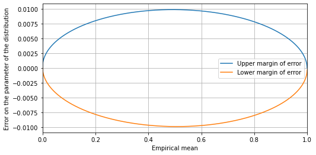

Confidence Intervals¶
[1]:
import numpy as np
import pandas as pd
from matplotlib import pyplot as plt
from scipy.stats import binom
from scipy import optimize
In our article, for the sake of conciseness, we do not give the confidence interval for each number in the body of the article and in the tables.
The following function computes the exact confidence interval for a repeated Bernouilli, with k successes out of n independent samples. The parameter confidence specifies the desired level of confidence, e.g. 95%. This function is adapted from https://github.com/KazKobara/ebcic.
[2]:
def exact_confidence_interval(n, k, confidence):
"""Return exact Binomial confidence interval for the parameter.
Returns:
lower_p (float): lower bound of Binomial confidence interval.
upper_p (float): upper bound of Binomial confidence interval.
"""
alpha = 1 - confidence
r = alpha / 2
if k > n / 2:
# Cumulative error becomes large for k >> n/2,
# so make k < n/2.
k = n - k
reverse_mode = True
else:
reverse_mode = False
def upper(p):
"""
Upper bound is the p making the following 0.
"""
return binom.cdf(k, n, p) - r
def lower(p):
"""
Lower bound for k>0 is the p making the following 0.
"""
return binom.cdf(n - k, n, 1 - p) - r
if k == 0:
lower_p = 0.0
upper_p = 1 - (alpha)**(1 / n)
else:
# 0 < k <= n/2
u_init = k / n
l_init = k / n
if k == 1:
l_init = 0
elif k == 2:
l_init = k / (2 * n)
lower_p = optimize.fsolve(lower, l_init)[0]
if n == 2 and k == 1:
# Exception of k/n = 1/2 and n is too small.
upper_p = 1 - lower_p
else:
upper_p = optimize.fsolve(upper, u_init)[0]
if reverse_mode:
lower_p, upper_p = 1 - upper_p, 1 - lower_p
return lower_p, upper_p
For 10,000 samples, we compute the 95% confidence interval for each possible value of the number of successes k:
[3]:
N_SAMPLES = 10000
ks = np.array(range(N_SAMPLES + 1))
lowers = []
uppers = []
averages = []
for k in ks:
lower, upper = exact_confidence_interval(n=N_SAMPLES, k=k, confidence=0.95)
lowers.append(lower)
uppers.append(upper)
averages.append(k / N_SAMPLES)
We plot the upper and lower margins of error as a function of the empirical mean:
[4]:
upper_margins = np.array(uppers) - np.array(averages)
lower_margins = np.array(lowers) - np.array(averages)
plt.subplots(figsize=(8, 4))
plt.plot(averages, upper_margins, label='Upper margin of error')
plt.plot(averages, lower_margins, label='Lower margin of error')
plt.xlabel('Empirical mean')
plt.ylabel('Error on the parameter of the distribution')
plt.xlim(0, 1)
plt.grid(True)
plt.legend()
[4]:
<matplotlib.legend.Legend at 0x2a4306a9470>

Some examples:
[5]:
ks_examples = (
list(range(10))
+ list(range(10, 100, 10))
+ list(range(100, 500, 100))
+ list(range(1000, 9000, 1000))
+ list(range(9000, 9900, 100))
+ list(range(9900, 9990, 10))
+ list(range(9990, 10001, 1))
)
df = pd.DataFrame()
df.index.name = 'k'
for k in ks_examples:
df.loc[k, 'Lower bound'] = "{:.4%}".format(lowers[k])
df.loc[k, 'Empirical mean'] = "{:.4%}".format(averages[k])
df.loc[k, 'Upper bound'] = "{:.4%}".format(uppers[k])
df.loc[k, 'Width of the confidence interval'] = "{:.4%}".format(uppers[k] - lowers[k])
df
[5]:
| Lower bound | Empirical mean | Upper bound | Width of the confidence interval | |
|---|---|---|---|---|
| k | ||||
| 0 | 0.0000% | 0.0000% | 0.0300% | 0.0300% |
| 1 | 0.0003% | 0.0100% | 0.0557% | 0.0555% |
| 2 | 0.0024% | 0.0200% | 0.0722% | 0.0698% |
| 3 | 0.0062% | 0.0300% | 0.0876% | 0.0815% |
| 4 | 0.0109% | 0.0400% | 0.1024% | 0.0915% |
| 5 | 0.0162% | 0.0500% | 0.1166% | 0.1004% |
| 6 | 0.0220% | 0.0600% | 0.1305% | 0.1085% |
| 7 | 0.0281% | 0.0700% | 0.1442% | 0.1160% |
| 8 | 0.0345% | 0.0800% | 0.1576% | 0.1230% |
| 9 | 0.0412% | 0.0900% | 0.1708% | 0.1296% |
| 10 | 0.0480% | 0.1000% | 0.1838% | 0.1359% |
| 20 | 0.1222% | 0.2000% | 0.3087% | 0.1865% |
| 30 | 0.2025% | 0.3000% | 0.4280% | 0.2255% |
| 40 | 0.2859% | 0.4000% | 0.5443% | 0.2584% |
| 50 | 0.3713% | 0.5000% | 0.6587% | 0.2873% |
| 60 | 0.4582% | 0.6000% | 0.7717% | 0.3135% |
| 70 | 0.5461% | 0.7000% | 0.8836% | 0.3375% |
| 80 | 0.6348% | 0.8000% | 0.9947% | 0.3598% |
| 90 | 0.7243% | 0.9000% | 1.1051% | 0.3808% |
| 100 | 0.8144% | 1.0000% | 1.2150% | 0.4006% |
| 200 | 1.7347% | 2.0000% | 2.2938% | 0.5591% |
| 300 | 2.6744% | 3.0000% | 3.3533% | 0.6789% |
| 400 | 3.6244% | 4.0000% | 4.4027% | 0.7783% |
| 1000 | 9.4187% | 10.0000% | 10.6047% | 1.1860% |
| 2000 | 19.2198% | 20.0000% | 20.7977% | 1.5778% |
| 3000 | 29.1028% | 30.0000% | 30.9089% | 1.8061% |
| 4000 | 39.0378% | 40.0000% | 40.9680% | 1.9301% |
| 5000 | 49.0151% | 50.0000% | 50.9849% | 1.9697% |
| 6000 | 59.0320% | 60.0000% | 60.9622% | 1.9301% |
| 7000 | 69.0911% | 70.0000% | 70.8972% | 1.8061% |
| 8000 | 79.2023% | 80.0000% | 80.7802% | 1.5778% |
| 9000 | 89.3953% | 90.0000% | 90.5813% | 1.1860% |
| 9100 | 90.4221% | 91.0000% | 91.5539% | 1.1318% |
| 9200 | 91.4510% | 92.0000% | 92.5244% | 1.0735% |
| 9300 | 92.4823% | 93.0000% | 93.4925% | 1.0102% |
| 9400 | 93.5166% | 94.0000% | 94.4576% | 0.9410% |
| 9500 | 94.5545% | 95.0000% | 95.4190% | 0.8645% |
| 9600 | 95.5973% | 96.0000% | 96.3756% | 0.7783% |
| 9700 | 96.6467% | 97.0000% | 97.3256% | 0.6789% |
| 9800 | 97.7062% | 98.0000% | 98.2653% | 0.5591% |
| 9900 | 98.7850% | 99.0000% | 99.1856% | 0.4006% |
| 9910 | 98.8949% | 99.1000% | 99.2757% | 0.3808% |
| 9920 | 99.0053% | 99.2000% | 99.3652% | 0.3598% |
| 9930 | 99.1164% | 99.3000% | 99.4539% | 0.3375% |
| 9940 | 99.2283% | 99.4000% | 99.5418% | 0.3135% |
| 9950 | 99.3413% | 99.5000% | 99.6287% | 0.2873% |
| 9960 | 99.4557% | 99.6000% | 99.7141% | 0.2584% |
| 9970 | 99.5720% | 99.7000% | 99.7975% | 0.2255% |
| 9980 | 99.6913% | 99.8000% | 99.8778% | 0.1865% |
| 9990 | 99.8162% | 99.9000% | 99.9520% | 0.1359% |
| 9991 | 99.8292% | 99.9100% | 99.9588% | 0.1296% |
| 9992 | 99.8424% | 99.9200% | 99.9655% | 0.1230% |
| 9993 | 99.8558% | 99.9300% | 99.9719% | 0.1160% |
| 9994 | 99.8695% | 99.9400% | 99.9780% | 0.1085% |
| 9995 | 99.8834% | 99.9500% | 99.9838% | 0.1004% |
| 9996 | 99.8976% | 99.9600% | 99.9891% | 0.0915% |
| 9997 | 99.9124% | 99.9700% | 99.9938% | 0.0815% |
| 9998 | 99.9278% | 99.9800% | 99.9976% | 0.0698% |
| 9999 | 99.9443% | 99.9900% | 99.9997% | 0.0555% |
| 10000 | 99.9700% | 100.0000% | 100.0000% | 0.0300% |